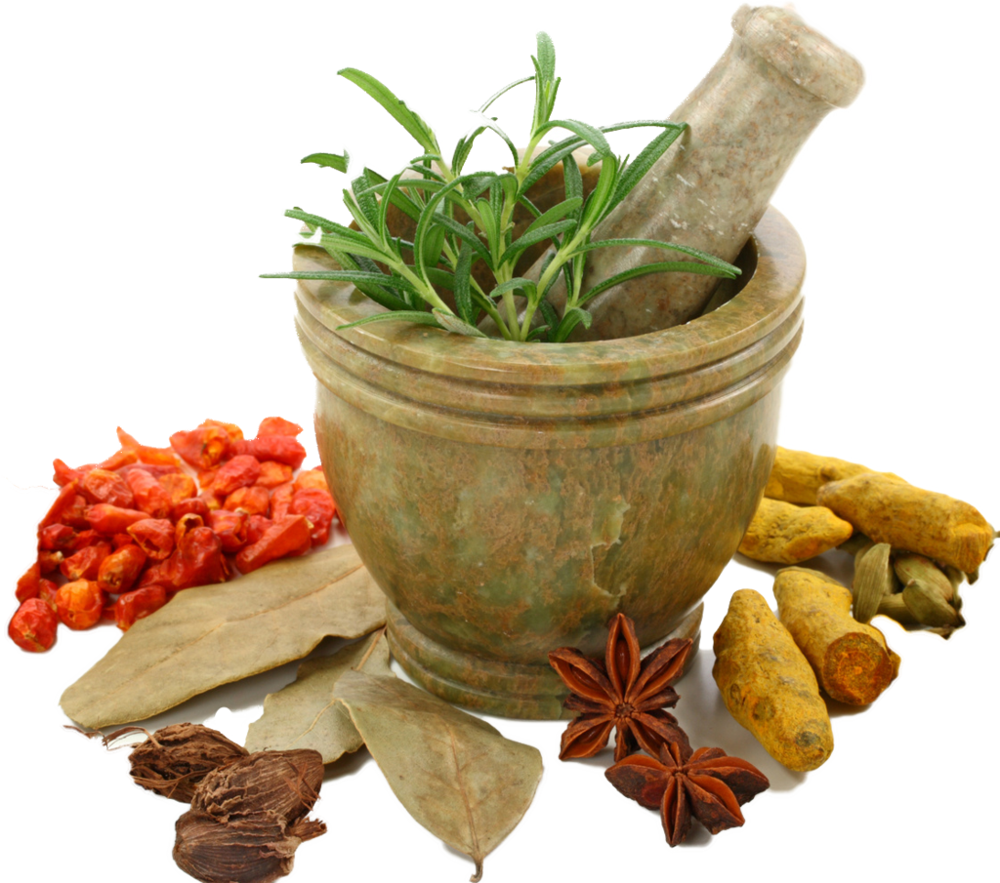

Sobre mim
Curiosidades sobre a iridologia
Você sabia que ela é tão antiga quanto a própria humanidade? A iridologia esteve presente nas antigas civilizações como Grécia, Babilônia e Egito.
Na Grécia antiga por exemplo a íris era tida como a deusa da mutação e da morte, por isso consideravam essa parte do olho o reflexo das metamorfoses da vida ocorrentes com o passar do anos.
Existe ainda uma lenda envolvendo o médico húngaro Ignatz von Peczely: diz-se que, quando ainda criança, Peczely brincava com uma coruja quando esta quebrou uma das pernas. Ele cuidou do animal e, ao longo do processo de cura, percebeu que a íris da coruja se alterava conforme ela melhorava. Ao se tornar médico, anos mais tarde, buscou associar alterações na íris de seus pacientes à evolução de suas doenças. Teria criado, assim, o primeiro mapa iridológico. Essa lenda possui diversas versões mas sempre envolvendo a análise do olho da coruja, que se tornou um dos símbolos da iridologia.
Sobre a irisdiagnose
A Irisdiagnose é uma ciência que tem como objetivo o estudo da íris e sua relação com as alterações que ocorrem com o nosso organismo, sejam elas orgânicas, metabólicas, nutricionais, nervosas, hormonais ou influências psíquicas e emocionais.
O olho está formado aos 6/7 anos de idade e na íris ficam registrados o que chamamos de órgãos de choque ou órgãos de menor resistência, isto é, os órgãos que nasceram mais fracos. São esses órgãos que primeiro sofrem as consequências de uma agressão orgânica/comportamental (vida sedentária, estresse, desnutrição, etc). A iris é formada por fibras e é através da observação das estruturas dessas fibras e da pigmentação (sua cor) que o profissional identifica os órgãos de choque bem como os desequilibrios no organismo/comportamento.
Todas as partes do nosso organismo estão representadas na íris que é a parte colorida dos nossos olhos e o seu estudo pode revelar muito sobre a nossa saúde, nossos comportamentos, bem como a carga genética que recebemos.
Um exemplo de análise
A marcação superior azul simboliza falta de oxigenação na região cerebral e podemos ver isso pelos tons azulados onde o olho deveria estar marrom como o resto da íris. Esse azul que segue boa parte do olho é chamado de anel de sódio/cálcio/colesterol e mostra que muitas veias e artérias estão entupindo.
O sinal verde significa que o estômago não está funcional e pessoa está propensa a problemas gastrointestinais.
A marcação lateral azul mostra uma região que escureceu muito, ficando quase preto, o que é sinal claro de uma circulação péssima.
A marcação roxa mostra fragilidades nas pernas, varizes e má circulação crônicas.
A marcação rosa é o sinal de fragilidades no rim, sendo um órgão que pode facilmente ficar doente.
Curiosidades sobre a Naturopatia
Definição de Naturopatia
Naturopatia é um sistema de medicina alternativa que enfatiza o uso de métodos naturais para promover a cura e prevenir doenças. Algumas de suas técnicas são fitoterapia, acupuntura e terapia ortomolecar. Foca-se na capacidade do corpo de se curar e na prevenção de problemas de saúde através de hábitos de vida saudáveis e nutrientes fornecidos pela natureza.
O que é terapia integrativa?
Terapias integrativas são práticas que combinam tratamentos convencionais da medicina moderna com abordagens alternativas e complementares, visando um cuidado holístico da pessoa. Exemplos incluem acupuntura, homeopatia, fitoterapia, meditação, e ioga. Elas focam na cura não apenas física, mas também emocional, mental e espiritual, promovendo bem-estar geral.
Definição de iridologia
Iridologia é uma prática científica que envolve a análise da íris, a parte colorida do olho, para avaliar a saúde geral de uma pessoa. Diferentes áreas da íris correspondem a órgãos e sistemas do corpo. Ao examinar padrões, cores e outras características da íris, podemos identificar problemas de saúde e desequilíbrios internos.